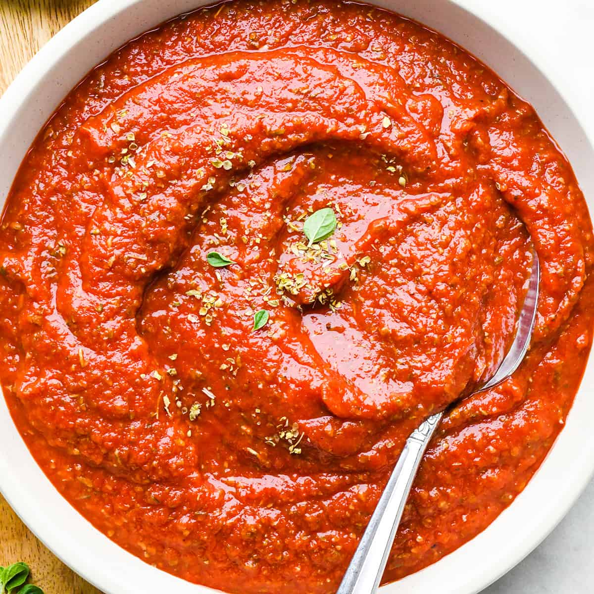

Pizza Sauce

The Best Pizza Sauce
Ingridents
- Tomato Sauce. Sometimes I run out of cans of tomato sauce, and in a pinch I have used a can of diced tomatoes that I tossed in the blender. You can also use fresh blended tomatoes as well.
- Tomato Paste. Please don’t leave out the tomato paste. It makes the pizza sauce thick which is key in making non-soggy pizza.
- Oregano/Italian seasoning. I always make this with dried spices, but you can use fresh. Also, if you like a sauce with a less bold flavor, you might want to start will less and add more to your preferences.
- Garlic salt. If you don’t keep garlic salt on hand, substitute an extra ¼ teaspoon garlic powder and ½ to 1 teaspoon sea salt.
- Granulated sugar. This can be omitted, or you can substitute honey. However the sugar enhances the flavor of the tomatoes and cuts the “bite” of the sauce.
Instructions
- Begin by mixing the tomato paste and sauce together in a medium size bowl until well combined. Using a whisk is a great choice.
- Then, add the rest of the ingredients (oregano, Italian seasoning, garlic powder, onion powder, garlic salt, pepper and sugar) and mix until the ingredients are evenly distributed throughout the sauce.